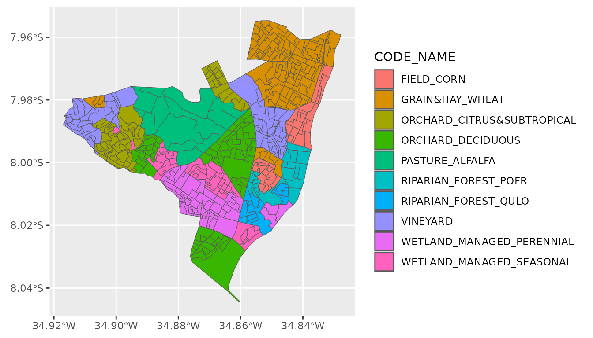

Introduction
The DeltaMultipleBenefits package facilitates estimating the net impacts of scenarios of landscape change in the Sacramento-San Joaquin River Delta, created with funding from the Proposition 1 Delta Water Quality and Ecosystem Restoration Program administered by the California Department of Fish and Wildlife (Grant Agreement Number–Q1996022).
The package provides tools for applying existing data and species distribution models to user-supplied landscapes to estimate a range of benefits to the Delta community and how they compare to other landscapes. Currently, the benefit categories addressed include: Agricultural Livelihoods, Water Quality, Climate Change Resilience, and Biodiversity Support. Each category is represented by multiple individual metrics that can be summarized over the entire landscape. By comparing metrics estimated from proposed scenarios of landscape change to metrics estimated for a baseline landscape representing current conditions, the expected net change in each metric can be estimated.
Ultimately, this R package is intended to facilitate a more comprehensive multidimensional understanding of the direction and magnitude of the potential impacts of landscape change (proposed or anticipated), communication about the projected synergies and trade-offs among multiple goals, and the identification of solutions to address these trade-offs.
This vignette serves as a tutorial outlining the major steps of analyzing alternative Delta landscapes and comparing them to each other, including:
- Preparing new landscape scenarios for analysis
- Summarizing the net change in the total area of each land cover class
- Estimating the net change in simple metrics
- Estimating the net change in metrics informed by spatial models
Here, we use a toy land cover data set as an example of how to work through these steps, but to reproduce the analyses conducted in Dybala et al. (In review)doi:Link TBD, the original baseline land cover data, scenarios, distribution models, and other required supporting data can be accessed online (see “Supporting Data” below) or are included with this package.
library(DeltaMultipleBenefits)
library(sf)
#> Linking to GEOS 3.12.1, GDAL 3.8.4, PROJ 9.4.0; sf_use_s2() is TRUE
library(terra)
#> terra 1.8.42
library(dplyr)
#>
#> Attaching package: 'dplyr'
#> The following objects are masked from 'package:terra':
#>
#> intersect, union
#> The following objects are masked from 'package:stats':
#>
#> filter, lag
#> The following objects are masked from 'package:base':
#>
#> intersect, setdiff, setequal, union
library(tidyr)
#>
#> Attaching package: 'tidyr'
#> The following object is masked from 'package:terra':
#>
#> extract
library(magrittr)
#>
#> Attaching package: 'magrittr'
#> The following object is masked from 'package:tidyr':
#>
#> extract
#> The following objects are masked from 'package:terra':
#>
#> extract, inset
library(ggplot2)
library(tibble)Step 1. Preparing a new landscape scenario for analysis
To prepare a new landscape scenario for analysis with the DeltaMultipleBenefits framework, its land cover classifications must first be aligned with those used in the framework, which are designed to work with the existing metrics and species distribution models. This land cover classification scheme includes both natural and agricultural land cover classes, and is organized hierarchically into major land cover classes and subclasses. Certain subclasses are only relevant to certain metrics and species distribution models, while other metrics will apply to the entire major land cover class. Therefore, we generally recommend assigning all land covers in your landscape scenario to the most specific subclass in the existing scheme:
data(key, package = 'DeltaMultipleBenefits')
head(key)
#> # A tibble: 6 × 7
#> CODE_BASELINE CODE_NAME CLASS SUBCLASS DETAIL LABEL COLOR
#> <dbl> <chr> <chr> <chr> <chr> <chr> <chr>
#> 1 10 PERENNIAL_CROPS PERENNIA… NA NA Pere… #940…
#> 2 11 ORCHARD_DECIDUOUS NA DECIDUO… NA Orch… #940…
#> 3 15 ORCHARD_CITRUS&SUBTROPICAL NA CITRUS … NA Orch… #C76…
#> 4 19 VINEYARD NA VINEYARD NA Vine… #ECB…
#> 5 20 ANNUAL_CROPS ANNUAL C… NA NA Annu… #32C…
#> 6 21 GRAIN&HAY NA GRAIN &… NA Grai… #FFA…1.1 Working with polygons
As an example of how to align the land cover classifications for a
new landscape scenario represented by polygons, we’ll work with the
olinda1 dataset from a file contained in the
sf package. This data set includes place names instead of
land cover classifications, but we’ll treat them as though they
represented land covers and recode them to supported
CODE_NAME values in the key. Finally, we’ll
join the key data to match new CODE_NAME
values to CODE_BASELINE values we’ll need later on.
olinda1 <- sf::st_read(system.file("shape/olinda1.shp", package = "sf"),
quiet = TRUE)
head(olinda1)
#> Simple feature collection with 6 features and 6 fields
#> Geometry type: POLYGON
#> Dimension: XY
#> Bounding box: xmin: -34.86406 ymin: -7.999297 xmax: -34.85496 ymax: -7.988471
#> Geodetic CRS: GRS 1980(IUGG, 1980)
#> ID CD_GEOCODI TIPO CD_GEOCODB NM_BAIR V014
#> 1 28801 260960005000001 URBANO 260960005020 Ouro Preto 1119
#> 2 28802 260960005000002 URBANO 260960005020 Ouro Preto 1267
#> 3 28803 260960005000003 URBANO 260960005020 Ouro Preto 557
#> 4 28804 260960005000004 URBANO 260960005020 Ouro Preto 709
#> 5 28805 260960005000005 URBANO 260960005020 Ouro Preto 1045
#> 6 28806 260960005000006 URBANO 260960005020 Ouro Preto 727
#> geometry
#> 1 POLYGON ((-34.86406 -7.9924...
#> 2 POLYGON ((-34.86129 -7.9899...
#> 3 POLYGON ((-34.85856 -7.9924...
#> 4 POLYGON ((-34.85752 -7.9948...
#> 5 POLYGON ((-34.8582 -7.99754...
#> 6 POLYGON ((-34.85957 -7.9960...
new_shp <- olinda1 %>%
# recode existing place name values with supported land cover names in key
dplyr::mutate(
CODE_NAME = dplyr::case_when(
NM_BAIR %in% c('Ouro Preto', 'Sítio Novo', 'Sapucaia', 'Salgadinho') ~
'ORCHARD_DECIDUOUS',
NM_BAIR %in% c('Tabajara', "Caixa D'Água", 'Águas Compridas',
'São Benedito') ~
'ORCHARD_CITRUS&SUBTROPICAL',
NM_BAIR %in% c('Fragoso', 'Alto da Bondade', 'Alto da Conquista',
'Passarinho') ~
'VINEYARD',
NM_BAIR %in% c('Bultrins', 'Jardim Atlântico', 'Rio Doce',
'Alto do Sol Nascente') ~
'GRAIN&HAY_WHEAT',
NM_BAIR %in% c('Alto da Nação', 'Monte', 'Casa Caiada') ~
'FIELD_CORN',
NM_BAIR %in% c('Guadalupe', 'Bonsucesso', 'Bairro Novo') ~
'RIPARIAN_FOREST_POFR',
NM_BAIR %in% c('Varadouro', 'Amparo', 'Amaro Branco') ~
'RIPARIAN_FOREST_QULO',
NM_BAIR %in% c('Vila Popular', 'Peixinhos', 'Carmo') ~
'WETLAND_MANAGED_PERENNIAL',
NM_BAIR %in% c('Jardim Brasil', 'Aguazinha', 'Santa Teresa') ~
'WETLAND_MANAGED_SEASONAL',
is.na(NM_BAIR) ~ 'PASTURE_ALFALFA',
TRUE ~ 'UNKNOWN')) %>%
# transfer CODE_BASELINE values from key
dplyr::left_join(key, by = 'CODE_NAME')
ggplot2::ggplot(new_shp) +
ggplot2::geom_sf(ggplot2::aes(fill = CODE_NAME))
Next, convert the polygons to a raster format with the desired
projection, extent, and resolution. Simple features objects must first
be converted to SpatVector objects using terra::vect().
Then we’ll create a raster template with a small number of columns and
rows (and thus coarse resolution) just for demonstration purposes, but
to ensure alignment with other rasters in your analysis, it usually
works best to use an existing raster as a template. Next, transfer the
land cover code values to the template to create a new landscape raster
that we’ll treat as our “baseline” landscape. Finally, to help with
plotting, we’ll assign factor levels and color codings.
# simplify number of fields, change to SpatVector, and change projection
new_vect = new_shp %>%
dplyr::select(CODE_NAME, CODE_BASELINE)
template = terra::rast(new_vect, ncols = 100, nrows = 100)
baseline = terra::rasterize(x = new_vect,
y = template,
field = 'CODE_BASELINE')
# assign factor levels:
levels(baseline) <- key %>%
dplyr::select(id = CODE_BASELINE, label = CODE_NAME) %>%
tidyr::drop_na() %>% as.data.frame()
# assign color coding
terra::coltab(baseline) <- key %>%
dplyr::select(CODE_BASELINE, COLOR) %>% tidyr::drop_na() %>%
tidyr::complete(CODE_BASELINE = c(0:255)) %>%
dplyr::pull(COLOR)
plot(baseline)1.2 Working with existing rasters
If the landscape to be analyzed is in a raster format already, the
existing land cover values encoded should be similarly translated to the
supported values in the existing land cover classification scheme. As an
example, we’ll use baseline raster we created above, and
create a new version from it to serve as our new scenario
of landscape change.
# simple example scenario: all wheat pixels (22) are converted to Fremont
# cottonwood riparian forest (71)
scenario <- terra::classify(baseline,
rcl = data.frame(from = 22, to = 71) %>%
as.matrix())
levels(scenario) <- key %>%
dplyr::select(id = CODE_BASELINE, label = CODE_NAME) %>%
tidyr::drop_na() %>% as.data.frame()
terra::coltab(scenario) <- key %>%
dplyr::select(CODE_BASELINE, COLOR) %>% tidyr::drop_na() %>%
tidyr::complete(CODE_BASELINE = c(0:255)) %>%
dplyr::pull(COLOR)
# stack landscapes to compare
landscapes = c(baseline, scenario)
names(landscapes) = c('baseline', 'scenario')
plot(landscapes) #Note the orange wheat cells have changed to red riparian cellsStep 2. Summarizing the net change in the total area of each land cover class
Built-in functions make it simple to estimate the change in the total area of each land cover class between the baseline and one or more scenario landscape rasters. First, sum the total area of each land cover class in each landscape raster, then summarize the change between them.
sum_landcover: This function takes a SpatRaster with
one or more layers and, for each layer, counts the number of pixels of
each unique land cover class and multiplies by the provided
pixel_area value to estimate the total area of each land
cover class. It returns a tibble with the scenario name (taken from the
names of each raster layer), the CODE_NAME of each land
cover class, and the total area. Here we’ll first use
terra::cellSize to estimate the area of each pixel in ha.
The option rollup = TRUE adds extra rows to the output with
the sum total area for all riparian and managed wetland subclasses. This
function also supports options to mask out portions of the raster and/or
to summarize the total area by zone.
area = terra::cellSize(baseline, unit = 'ha')[50,50] %>% tibble::deframe()
landcover_totals = DeltaMultipleBenefits::sum_landcover(
landscapes = landscapes,
pixel_area = area,
rollup = TRUE) %>%
arrange(scenario, CODE_NAME)sum_change: This function calculates the net change
in the area of each land cover class between the baseline landscape and
one or more scenario landscapes. Note that this function expects the
output from sum_landcover, which includes the field
scenario representing the names of each landscape. At least
one scenario must be named “baseline”, and all other scenarios will be
assumed to represent an alternative scenario landscape for comparison to
the baseline. Thus the net change for multiple scenarios can be
estimated simultaneously. The result is a tibble with the scenario name,
the CODE_NAME of each land cover class, fields representing
the total area of the land cover class for the scenario in question and
the corresponding area for the baseline, and then the
net_change between them, where a positive value indicates
an increase from the baseline.
landcover_change = DeltaMultipleBenefits::sum_change(landcover_totals)Step 3. Estimating the net change in simple metrics
We developed several “simple metrics” representing several categories of benefits including: agricultural livelihoods, water quality, and climate change resilience. For example, agricultural livelihood metrics include the number of agricultural jobs, their average annual wage, and gross production value. These are all “simple metrics” in the sense that a single mean value for each metric is used to represent each land cover class, regardless of where in the Delta the land cover is located. Therefore, estimating the net change in these metrics between a baseline and scenario landscape is relatively simple compared to estimating the net change in metrics derived from a spatial model (see below), and the steps are similar to estimating the net change in land cover area above. However, the uncertainty in the value of each metric for each land cover class, such as resulting from spatial or temporal variation, can also be accounted for in estimating the uncertainty in the net change. The values assigned to each land cover class for each metric are available to download via Zenodo (doi:[10.5281/zenodo.7504874](https://doi.org/10.5281/zenodo.7504874)), but are also included in this package:
sum_metrics: First estimate the total landscape
score for each metric and landscape raster, by combining total area of
each land cover class estimated above with the per-unit-area metrics for
each land cover class. For most metrics, this involves multiplying the
per-unit-area metrics by the total area of each land cover class and
summing over the entire landscape. For Annual Wages (as part of the
Agricultural Livelihoods category of benefits), it instead calculates
the new weighted average wage across all agricultural hectares (i.e.,
those supporting agricultural jobs with an associated wage value). For
metrics in the Climate Change Resilience category, it instead calculates
the new overall average resilience score on a scale of 1 (low
resilience) to 10 (high resilience). The function returns a tibble with
the scenario name, fields from metrics defining metric
categories and units, a SCORE_TOTAL and a
SCORE_TOTAL_SE, representing the combined uncertainty. The
units field is also updated to reflect that the scores are
no longer per-hectare, but instead summed over all hectares in the
landscape.
The total area of each land cover class as calculated above includes
both the area of individual riparian and managed wetland subclasses as
well as the roll-up total area, so we must take care not to double-count
them in the total landscape scores calcualted here. Thus far,
metrics are not available for riparian and managed wetland
subclasses, and instead apply to riparian and managed wetland land
covers generally. Therefore, here we filter out the subclasses to
exclude them from this calculation.
Note: We will get a warning message here, because our example landscapes do not include all land cover classes present in our metrics data.
scores = DeltaMultipleBenefits::sum_metrics(
metricdat = metrics %>%
dplyr::filter(
!(grepl('RIPARIAN_|WETLAND_MANAGED_|WETLAND_TIDAL|WATER', CODE_NAME))),
areadat = landcover_totals %>%
filter(!(grepl('RIPARIAN_|WETLAND_MANAGED_|WETLAND_TIDAL|WATER', CODE_NAME)))) sum_change: Then, we can again use
sum_change to estimate the difference in each metric
between the baseline and scenario landscapes. However, this time because
there is uncertainty in the total landscape scores, the uncertainty in
the difference will also be estimated. Here we use a coverage factor
k = 2 to approximate a 95% confidence interval for the
net_change.
scores_change = DeltaMultipleBenefits::sum_change(scores, k = 2)
head(scores_change)Visualize the resulting estimates of net change:
scores_change %>%
# invert water quality scores so a reduction in pesticide use is shown as a
# net benefit
dplyr::mutate(
net_change = dplyr::if_else(
METRIC_CATEGORY == 'Water Quality',
-1 * net_change,
net_change)) %>%
ggplot2::ggplot(ggplot2::aes(net_change, METRIC)) +
ggplot2::facet_wrap(~METRIC_CATEGORY, ncol = 1, scales = 'free') +
ggplot2::geom_col() +
ggplot2::geom_errorbar(ggplot2::aes(xmin = lcl, xmax = ucl), width = 0.25) +
# add blank geoms to ensure zeroes line up across facets
ggplot2::geom_blank(ggplot2::aes(x = -ucl)) +
ggplot2::geom_blank(ggplot2::aes(x = -lcl)) +
ggplot2::theme_minimal()Step 4. Estimating the net change in metrics informed by spatial models
In addition to the “simple metrics” described above, we developed spatial distribution models for riparian landbirds and waterbirds that predict the probability of species presence for each pixel on the landscape, depending on the land cover class at that pixel, the composition of land cover classes in the surrounding area, and other features of the landscape. We used the probability of presence predictions as an indicator of suitable habitat, and to represent the benefits category of biodiversity support. Evaluating the net change in biodiversity support between scenario and baseline landscapes is necessarily more complicated than evaluating the “simple metrics” above, but also allows for more nuance and spatial variation.
Currently, the only spatial models supported are the distribution models for riparian landbird species and groups of waterbird species. Their development is described in a manuscript (Dybala et al. In review - Link TBD) and the models are available to download via Zenodo (doi: 10.5281/zenodo.7531945). However, spatial models for other species, and for other benefits categories could be incorporated in future versions of this package as they are developed.
4.1 Riparian landbird models
4.1.1 Prepare landscape predictors
Beginning with the models for riparian landbird species, first use built-in functions to generate focal statistics for each pixel in the baseline and scenario landscape rasters that represent features of the landscape within a certain distance of each survey location. The steps are to: (1) prepare each landscape raster for generating focal stats, (2) use Python to run the focal stats, and (3) finalize the predictors for use with the models. For ease of use with a large number of rasters, each of these functions are intended to write to or read from a directory defined in the functions arguments, rather than work with rasters in memory.
python_focal_prep: The first step separates each
landscape raster into separate layers for each distinct land cover
class, with a default value of 1 everywhere the land cover
class is present, and a 0 otherwise. In addition, this
function calls the function reclassify_landcover to
aggregate and rename the land cover classes as appropriate for the
intended set of distribution models, specified by the value of
SDM. Currently, the only options for SDM
include ‘riparian’, ‘waterbird_fall’, or ‘waterbird_win’. The result is
written to a directory located at:
pathout/SDM/landscape_name. If the directory does not
already exist, it will be created automatically.
Note: the function will expect the values in each provided landscape to have labels assigned, for use in defining the names of the new layers.
Use the purrr::map function to run this function for
each landscape:
purrr::map(names(landscapes),
~DeltaMultipleBenefits::python_focal_prep(
landscape = landscapes[[.x]],
SDM = 'riparian',
pathout = 'GIS/SDM_predictors/cover',
landscape_name = .x,
overwrite = TRUE))python_focal_run: The second step is to generate
focal statistics for each of the separate land cover rasters generated
in the previous step. Focal statistics perform a given operation on all
cells within a given distance of the focal cell, and repeated for every
cell in the raster. This process is slow, and while it can be run
entirely in R, it is much faster to use Python. Therefore, this function
currently requires Python to be installed on your system and
specifically arcpy with the Spatial Analyst extension. The
R package reticulate will be used internally to run a
simple python script for generating focal statistics. To ensure the
arcpy module can be found, you may need to specify which
version of Python to use. For example (change the filepath as needed to
reflect your system):
reticulate::use_python('C:/Python27/ArcGISx6410.8/python.exe', required = TRUE)In this example, we apply the function SUM to the
rasters generated in the previous step which have a value of
1 for every cell where the land cover class is present, so
that the result will represent the total number of cells of each land
cover class within the distance defined by the scale
argument. The riparian landbird models require focal stats summarizing
both landscapes within two different radii: 50m and 2000m. So here we
can use purrr:map2 to iterate over all 4 combinations of
landscape and radius. The results are writen to
pathout/SDM/landscape_name/scale.
Note that there is no overwrite option for this
function. If the files already exist in
pathout/SDM/landscape_name, it will return an error.
Previous versions should be deleted manually or pathout
changed.
purrr::map2(.x = c(rep(names(landscapes), each = 2)),
.y = c(rep(c('50', '2000'), 2)),
~DeltaMultipleBenefits::python_focal_run(
pathin = 'SDM_predictors/cover',
landscape_name = .x,
SDM = 'riparian',
scale = .y,
fun = 'SUM',
pathout = 'SDM_predictors/focal_stats'))python_focal_finalize: The third step is to finalize
the results of the focal stats in the previous step to generate
predictors for use with the riparian distribution models. For
SDM = 'riparian', this will result in converting the
results of the previous step, which provide the total number of cells of
each land cover class, to a proportion of the total number of cells and
appending the scale value to the predictor name as
_50 or _2000, as expected by the original
model. As above, we can use purrr:map2 to iterate over all
4 combinations of landscape and radius. The results are written to the
directory pathout/landscape_name.
4.1.2 Generate model predictions
fit_SDM: Use the finalized predictors created in the
previous step for each landscape to fit the distribution models for each
of the 9 riparian landbird species. The modlist should
refer to an R object containing a list of the riparian distribution
models.
The original models included area.ha, a predictor
accounting for variation in survey effort, which should be held constant
for new predictions; we selected 3.14159 referring to the total area in
hectares within 50m of a survey location, after 4 surveys. In addition,
the original models included region, a predictor indicating
whether the survey was conducted in the Sacramento Valley (region = 0)
or in the Delta or San Joaquin (region = 1). Thus, all predictions for
the Delta should have a constant value of 1. These constant values can
be passed in as a dataframe, rather than needing to create raster layers
for them, as we did for the other predictors. In addition, in the
original analysis we considered open water to be an unsuitable land
cover class for riparian landbirds a priori, and so we
specified unsuitable = 90 (the land cover class value for
open water); this will create a mask from the provided
landscape with 0 values wherever the land cover class
equals the values provided in unsuitable and NA elsewhere,
used to cover the predicted values from the model. Thus, the original
call to this function in our analyses for the Delta looked like
this:
purrr::map(names(landscapes),
~DeltaMultipleBenefits::fit_SDM(
pathin = 'SDM_predictors',
SDM = 'riparian',
landscape_name = .x,
modlist = BRT_riparian,
constants = data.frame(region = 1,
area.ha = 3.141593),
landscape = landscapes[[.x]],
unsuitable = 90, #open water
pathout = 'SDM_results'))However, this code will not work correctly on our example landscapes for two reasons: (1) the unsuitable land cover class value of 90 does not exist in our example scenario, and so will result in a mask landscape of all NA values, throwing an error, and (2) our example scenario does not include ALL of the predictors required in the original distribution model, including all land cover classes, climate variables, and distance to stream.
To predict riparian landbird distributions for our example
landscapes, all required predictors must be provided, either as
additional raster files in the pathin directory or as
constant values. For demonstration purposes only (this approach is
not appropriate for real analyses), we will treat the missing land
cover classes as truly absent from the landscape, with a value of 0 for
every pixel and assume the climate and distance to stream does not vary
across our example landscape. We will also refrain from specifying any
of these land covers as unsuitable a priori.
Note: Any predictor provided as a constant will take precedence
over any predictor provided as a raster in the pathin
directory.
purrr::map(names(landscapes),
~DeltaMultipleBenefits::fit_SDM(
pathin = 'SDM_predictors',
SDM = 'riparian',
landscape_name = .x,
pathout = 'SDM_results',
modlist = BRT_riparian,
constants = data.frame(region = 1,
area.ha = 3.141593,
streamdist = 20,
bio_1 = 15.5,
bio_12 = 400,
SALIX_50 = 0,
MIXEDFOREST_50 = 0,
SALIXSHRUB_50 = 0,
MIXEDSHRUB_50 = 0,
INTROSCRUB_50 = 0,
WATER_50 = 0,
URBAN_50 = 0,
IDLE_50 = 0,
RICE_50 = 0,
SALIX_2000 = 0,
MIXEDFOREST_2000 = 0,
SALIXSHRUB_2000 = 0,
MIXEDSHRUB_2000 = 0,
INTROSCRUB_2000 = 0,
WATER_2000 = 0,
IDLE_2000 = 0,
URBAN_2000 = 0,
RICE_2000 = 0)))transform_SDM: Finally, because the riparian
landbird species varied in their prevalence across the landscape and in
the precision of the distribution models, different thresholds in their
predicted probability of presence are useful for separating locations
where they are most likely to be present or absent. Therefore, to
estimate the total area of suitable habitat for each species, and for
riparian landbirds collectively, it is useful to convert the continuous
probabilities of species presence predicted in the previous step to
binary predictions of presence or absence. This function passes
detection data embedded in the original models to the
dismo::threshold function to identify values for the
predicted probability of presence that meet the criteria specified.
Here, we use the statistic equal_sens_spec, which is the
value at which specificity (the probability of correctly predicting
species absence) is equal to sensitivity (the probability of correctly
predicting species presence), but other statistics can be selected (see
?dismo::threshold).
purrr::map(names(landscapes),
~DeltaMultipleBenefits::transform_SDM(
pathin = 'SDM_results',
SDM = 'riparian',
landscape_name = .x,
modlist = BRT_riparian[1],
stat = 'equal_sens_spec',
pathout = 'SDM_results_threshold'))4.2 Waterbird models
The process for fitting waterbird distribution models to each landscape is similar to the process for riparian landbirds, but requires a few extra steps to generate updated landscape data that are required. In addition, there are two separate sets of distribution models for waterbird groups during the fall (July - mid-Nov) and winter (mid-Nov - Mar) seasons, which were developed in recognition of the seasonal changes in species abundance as well as seasonal changes in specific crop classes in areas where there is a distinct winter crop. Therefore, in the original analysis, we developed winter versions of the baseline and scenario landscapes for evaluation. However, for demonstration purposes, we have only generated one example scenario landscape.
4.2.1 Generate updated landscape data
The waterbird distribution models require generating focal statistics
representing the landscape, similar to the riparian landbird
distribution models, but they also require inputs representing
covertype (a categorical predictor for the land cover class
in each cell), pwater (the probability of open water in
each cell), and droost (distance to traditional nighttime
crane roosts), all of which may be affected by each landscape scenario
and must also be updated for each landscape to be evaluated. In
particular, pwater must be updated prior to generating
focal statistics in the next step below.
update_covertype: Covertype is a categorical
predictor reflecting the land cover class in each pixel. Due to the
original study design, only a subset of land cover classes were selected
for survey in each season and are thus included in predictions for
future landscapes: managed wetlands, rice, alfalfa, and irrigated
pasture in both seasons, as well as corn and winter wheat during the
winter season. Because the options are different in each season, we run
this function twice, specifying the intended SDM; all other cover types
will be encoded as NA. The result is a raster layer
covertype.tif ready to use in the distribution models, and
therefore pathout should also be the intended directory for
the eventual output of python_focal_finalize below.
Note: Our example landscapes do not include all of these surveyed land cover classes, so the result of this code will only include values for Alfalfa and Wetland.
purrr::map(names(landscapes),
~DeltaMultipleBenefits::update_covertype(
landscape = landscapes[[.x]],
landscape_name = .x,
key = key,
SDM = 'waterbird_fall',
pathout = 'SDM_predictors',
overwrite = TRUE))
purrr::map(names(landscapes),
~DeltaMultipleBenefits::update_covertype(
landscape = landscapes[[.x]],
landscape_name = .x,
key = key,
SDM = 'waterbird_win',
pathout = 'SDM_predictors',
overwrite = TRUE))update_pwater: The waterbird distribution models
also included pwater indicating the proportion of the
original survey area that was flooded. For prediction purposes, we used
information about the observed probability of surface water being
present in each cell, during each season over several years. This
surface water data was derived from Point Blue’s Water Tracker, which
analyzes remote sensing data to detect surface water. However, in a
scenario of future landscape change, such as conversion of a grassland
to a managed wetland, we would expect the probability of surface water
to also change. Therefore, if both a baseline and scenario landscape are
provided, this function will analyze the provided pwater
raster by the baseline land cover class to identify the average
probability of surface water, and then for the scenario, assigns the
expected probability of surface water to any cells that have changed
land cover class. If only one landscape is provided, The original
baseline pwater raster layers for the Delta are available
to download from Zenodo doi: link TBD.
Here, we randomly generate an example baseline pwater and
then use the function to create an updated pwater layer for
our example scenario.
pwater_base_fall = rast(landscapes$baseline,
vals = runif(ncell(landscapes$baseline), min = 0, max = 1))
# here the first iteration is NULL for the scenario_landscape parameter, so the
# function will simply copy the baseline version of pwater to the appropriate
# pathout directory; the second iteration will produce updated assumptions of
# pwater for the future scenario
purrr::pmap(
list(scenario_landscape = list(NULL, scenario_example),
landscape_name = c('baseline', 'scenario_example')),
DeltaMultipleBenefits::update_pwater,
waterdat = pwater_base_fall,
pathout = 'SDM_predictors',
SDM = 'waterbird_fall',
overwrite = TRUE,
baseline_landscape = landscapes$baseline,
floor = FALSE)
# repeat for winter, assuming pwater values vary seasonally
pwater_base_win = rast(landscapes$baseline,
vals = runif(ncell(landscapes$baseline), min = 0, max = 1))
# --> Note: if we had different version of the landscape rasters for the winter
# season, we would also use those here. In this example, we assume land covers
# do not change seasonally.
purrr::pmap(
list(scenario_landscape = list(NULL, landscapes$scenario_example),
landscape_name = c('baseline', 'scenario_example')),
DeltaMultipleBenefits::update_pwater,
waterdat = pwater_base_win,
pathout = 'SDM_predictors',
SDM = 'waterbird_win',
overwrite = TRUE,
baseline_landscape = landscapes$baseline,
floor = FALSE)update_roosts & python_dist: In addition to
changes in the probability of open water on the landscape, land cover
changes may also affect the suitability of traditional night-time crane
roosts. Because the distance to roost was an important predictor on the
distribution models for cranes, accounting for the loss of traditional
roost locations would affect these distances. The original data source
for traditional roost locations is included in this package, but could
be combined with updated information as it becomes available. The
update_roosts function allows defining which land cover
class codes are incompatible with crane roosts, and the threshold
proportion of the traditional crane roost polygon at which the entire
roost would be considered unsuitable. In our original analyses, we
considered crane roosts to be incompatible with perennial crops, urban
land cover, riparian vegetation, woodland, or scrub, and we assumed once
20% of the roost was covered by unsuitable land covers, the roost
location would be abandoned. The result of update_roosts is
an intermediate file at representing the new assumed locations of
traditional roosts, which is then used as an input to
python_dist for use in updating the estimated distance to
roost predictor for each pixel in the landscape.
Note: The land cover types we have designated as “unsuitable” for use as a crane roost are not expected to vary seasonally, and so we do not need to create separate versions corresponding to fall and winter waterbird SDMs.
data(roosts_original)
DeltaMultipleBenefits::update_roosts(
landscape = landscapes$scenario_example,
landscape_name = 'scenario_example',
unsuitable = c(11:19, 60, 70:79, 100:120),
proportion = 0.2,
roosts = terra::vect(roosts_original),
pathout = 'SDM_predictors/crane_roosts',
overwrite = TRUE)
DeltaMultipleBenefits::python_dist(
pathin = 'SDM_predictors/crane_roosts',
landscape_name = 'scenario_example',
pathout = 'SDM_predictors',
SDM = 'waterbird_fall',
filename = 'droost_km.tif',
scale = 'km')4.2.2 Prepare landscape predictors
Once the previous steps are completed, especially the update to
pwater, the same steps used for the riparian landbirds are
used to generate focal statistics, but also including focal statistics
based on pwater.
python_focal_prep: Prepare the land cover rasters as
for riparian landbirds, splitting land cover classes into separate
layers and aggregating as needed for the waterbird models. This time,
cells where each land cover class is present will be filled with a value
corresponding to the area of each pixel, and each land cover layer will
also be used as a mask for the corresponding updated pwater
data, resulting in a second layer for each land cover class filled with
values corresponding to their probability of being flooded. Thus, two
layers are created for each land cover class, and we provide two custom
suffix values to distinguish them when the files are
written to pathout/SDM/landscape_name.
# waterbird_fall
pwater_fall = list.files('SDM_predictors/waterbird_fall', 'pwater.tif$',
full.names = TRUE)
#pwater names should match landscape names
names(pwater_fall) = names(landscapes)
purrr::map(names(landscapes),
~DeltaMultipleBenefits::python_focal_prep(
landscape = landscapes[[.x]],
landscape_name = .x,
SDM = 'waterbird_fall',
mask = pwater_fall[[.x]],
pixel_value = 0.09,
pathout = 'SDM_predictors/cover',
suffix = c('_area', '_pfld')))
# waterbird_win
pwater_win = list.files('SDM_predictors/waterbird_win', 'pwater.tif$',
full.names = TRUE)
#pwater names should match landscape names
names(pwater_win) = names(landscapes)
purrr::map(names(landscapes),
~DeltaMultipleBenefits::python_focal_prep(
landscape = scenarios[[.x]],
landscape_name = .x,
SDM = 'waterbird_win',
mask = pwater_win[[.x]],
pixel_value = 0.09,
pathout = 'SDM_predictors/cover',
suffix = c('_area', '_pfld')))python_focal_run: The next step proceeds as for the
riparian landbirds above, generating focal statistics for each of the
separate land cover rasters generated in the previous step. However,
waterbird models require focal statistics on three different scales:
2000, 5000, and 10000 (although waterbird_win models do not require the
2000 scale), and they require separate processing of the
_area layers (with fun = 'SUM') and
_pfld layers (with fun = 'MEAN'). Here we use
purrr::pmap() to iterate over all combinations of
landscape, SDM, and spatial scale, and we use the optional
regex parameter to specify the subset to process in each
batch.
Note again that there is no overwrite option for
this function. If the files already exist in
pathout/SDM/landscape_name, it will return an error.
Previous versions should be deleted manually or pathout
changed.
combos = bind_rows(
expand_grid(SDM = 'waterbird_fall',
landscape_name = names(scenarios),
scale = c('2000', '5000', '10000')),
expand_grid(SDM = 'waterbird_win',
landscape_name = names(scenarios),
scale = c('5000', '10000')))
# total area of each land cover class for each spatial scale, SDM, and landscape
purrr::pmap(combos,
DeltaMultipleBenefits::python_focal_run,
pathin = 'SDM_predictors/cover',
pathout = 'SDM_predictors/focal_stats',
regex = '*_area.tif', fun = 'SUM')
# mean pfld for each land cover class for each spatial scale, SDM, and landscape
purrr::pmap(combos,
DeltaMultipleBenefits::python_focal_run,
pathin = 'SDM_predictors/cover',
pathout = 'SDM_predictors/focal_stats',
regex = '*_pfld.tif', fun = 'MEAN')python_focal_finalize: Next, finalize the results of
the focal stats in the previous step to generate predictors for use with
the waterbird distribution models. For
SDM = 'waterbird_fall' or
SDM = 'waterbird_win', this will result in appending the
scale to the predictor name in the format “_2k”, “_5k”, or
“_10k”, as expected by the original models. The results are written to
the directory pathout/SDM/landscape_name.
4.2.3 Generate model predictions
fit_SDM: Use the finalized predictors created in the
previous step for each landscape to fit the distribution models for each
of the 5 fall and 6 winter waterbird groups. Again, the
modlist should refer to an R object containing a list of
the fall or winter waterbird distribution models.
Similar to the riparian models, the waterbird models included
offset, a predictor accounting for variation in survey
effort, with different values appiled to the predictions for waterbird
groups in fall vs. winter, as well as a separate value for cranes and
geese during the fall (which had a more restricted fall season). In
addition, the covertype of the area within which the survey
was conducted was treated as a factor variable, which must be specified,
and the available factor levels varied between the fall and winter
seasons. In the original analysis, we also considered perennial crops,
urban, and barren land covers to be an unsuitable waterbirds a
priori, and so we specified
unsuitable = c(10:19, 60, 130) (the corresponding land
cover class values); this will create a mask from the provided
landscape with 0 values wherever the land cover class
equals the values provided in unsuitable and NA elsewhere,
used to cover the predicted values from the model. Thus, due to the
distinct values for offset, we call fit_SDM
three times:
# fall: cranes, geese
purrr::map(names(landscapes),
~DeltaMultipleBenefits::fit_SDM(
pathin = 'SDM_predictors',
SDM = 'waterbird_fall',
landscape_name = .x,
modlist = waterbird_mods_fall[c('crane', 'geese')],
constants = data.frame(offset = 3.709),
factors = list(list('covertype' = c('Alfalfa',
'Irrigated pasture',
'Rice',
'Wetland'))),
unsuitable = c(10:19, 60, 130),
landscape = landscapes[[.x]],
pathout = 'SDM_results'))
# fall: dblr, shore, cicon:
purrr::map(names(landscapes),
~DeltaMultipleBenefits::fit_SDM(
pathin = 'SDM_predictors',
SDM = 'waterbird_fall',
landscape_name = .x,
modlist = waterbird_mods_fall[c('dblr', 'cicon', 'shore')],
constants = data.frame(offset = 4.435),
factors = list(list('covertype' = c('Alfalfa',
'Irrigated pasture',
'Rice',
'Wetland'))),
unsuitable = c(10:19, 60, 130),
landscape = landscapes[[.x]],
pathout = 'SDM_results'))
# winter: all
purrr::map(names(landscapes),
~DeltaMultipleBenefits::fit_SDM(
pathin = 'SDM_predictors',
SDM = 'waterbird_win',
landscape_name = .x,
modlist = waterbird_mods_win,
constants = data.frame(offset = 3.617),
factors = list(list('covertype' = c('Alfalfa',
'Corn',
'Irrigated pasture',
'Rice',
'Wetland',
'Winter wheat'))),
unsuitable = c(10:19, 60, 130), #perennial crops, urban, barren
landscape = scenarios[[.x]],
pathout = 'SDM_results',
overwrite = TRUE))transform_SDM: Again, as with riparian landbirds, convert the continuous probabilities of waterbird group presence predicted in the previous step to binary predictions of presence or absence.
purrr::map(names(landscapes),
~DeltaMultipleBenefits::transform_SDM(
pathin = 'SDM_results',
SDM = 'waterbird_fall',
landscape_name = .x,
modlist = BRT_riparian[1],
stat = 'equal_sens_spec',
pathout = 'SDM_results_threshold'))
purrr::map(names(landscapes),
~DeltaMultipleBenefits::transform_SDM(
pathin = 'SDM_results',
SDM = 'waterbird_win',
landscape_name = .x,
modlist = BRT_riparian[1],
stat = 'equal_sens_spec',
pathout = 'SDM_results_threshold'))4.3 Estimate the net change in bird habitat
At this stage, the steps for estimating the net change in the total amount of habitat provided by each scenario for riparian landbirds and waterbird groups is similar to estimating the net change in the area of each land cover class and in each of the “simple metrics” above.
sum_habitat: Estimate the total area of each
landscape each species is predicted to occupy. This function is similar
to sum_landcover, but with a few key differences. By
default, all prediction rasters in the pathin argument and
any subdirectories will be included, so it can handle the results from
multiple scenarios and multiple sets of distribution models
simultaneously. However, SDM or both SDM and
landscape_name can optionally be specified to limit the
predictions evaluated. In addition, by including the option
rollup = TRUE, the total area occupied by at least one
species in the set will also be calculated.
By default, the result is the total count of pixels with a predicted
species presence, but the count can be optionally multiplied by the area
of each pixel by providing a pixel_area value in the
desired units. Here we also added a mutate argument to the
results to clearly specify the units used. Either way, the results are
structured to align with the results of sum_metrics() used
above for summarizing the total landscapes scores for the simple
metrics, so that the habitat totals can be appended to those results,
and the net change can be estimated simultaneously.
habitat_totals = DeltaMultipleBenefits::sum_habitat(
pathin = 'SDM_results_threshold',
rollup = TRUE,
pixel_area = 0.09) %>%
dplyr::mutate(UNIT = 'ha')sum_change: Again, use this function to estimate the
net change in the total area of the landscape each species is predicted
to occupy, as an indication of the net change in the total area of
suitable habitat for each species. Optionally
habitat_totals can first be appended to scores
above (the result of sum_metrics()) to calculate the net
change across all benefits categories simultaneously and include
biodiversity support in the visualization of the results alongside the
other categories of benefits.
scores_change_habitat = DeltaMultipleBenefits::sum_change(habitat_totals)Supporting Data
Baseline and scenario rasters: Dybala KE. 2023. Baseline and projected future land use and land cover in the Sacramento-San Joaquin Delta. Available from: https://wildlife.ca.gov/Data/BIOS
Metrics (also included in the DeltaMultipleBenefits package): Dybala KE. 2023. Multiple-benefit Conservation in Practice: Metrics Data for Quantifying Multidimensional Impacts of Landscape Change in California’s Sacramento–San Joaquin Delta. doi: 10.5281/zenodo.7504874.
Species distribution models: Dybala KE, Sesser KA, Reiter ME, Shuford WD, Golet GH, Hickey CM, Gardali T. 2023. Distribution models for riparian landbirds and waterbirds in the Sacramento-San Joaquin Delta. doi: 10.5281/zenodo.7531945.
Supplemental spatial data: Dybala KE. 2023. Multiple-benefit Conservation in Practice: Supplemental Spatial Data for Quantifying Multidimensional Impacts of Landscape Change in California’s Sacramento–San Joaquin Delta. doi: 10.5281/zenodo.7672193.
Relevant Literature
Dybala K, Sesser K, Reiter M, Shuford WD, Golet GH, Hickey C, Gardali
T (2023) Priority Bird Conservation Areas in California’s Sacramento–San
Joaquin Delta. San Francisco Estuary and Watershed Science 21(3). DOI:
10.15447/sfews.2023v21iss3art4
Dybala KE, Reiter ME, Hickey CM (In press) Multiple-benefit Conservation in Practice: A Framework for Quantifying Multi-dimensional Impacts of Landscape Change in California’s Sacramento–San Joaquin Delta. San Francisco Estuary and Watershed Science.
Dybala KE, Sesser K, Reiter M, Hickey C, Gardali T (2023) Final
Project Report: Trade-offs and Co-benefits of Landscape Change Scenarios
on Bird Communities and Ecosystem Services in the Sacramento-San Joaquin
River Delta. Point Blue Conservation Science, Petaluma, CA